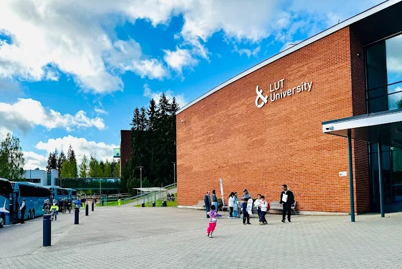
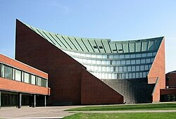
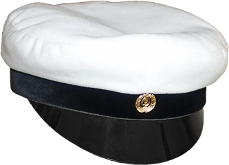

Koulutus
Opiskelen tällä hetkellä Taitotalossa tieto- ja viestintätekniikan perustutkintoa. Aloitin 2025 lokakuussa.
Olen opiskellut yksittäisiä kursseja Metropoliassa aikuisopiskelijana vuosina 2024-2025.
Olen opiskellut yksittäisiä kursseja LUT:ssa aikuisopiskelijana vuosina 2023-2024.

Olen aiemmalta koulutukseltani DI Teknillisestä korkeakoulusta. Opiskelin siellä vuosina 1997-2009 sähkötekniikan osastolla. Pääaineena oli eletkroniikka ja mittaustekniikka. Sivuaine oli televiestintäjärjestelmät. Diplomityö oli sähkömagneettinen yhteensopivuus ja monisirumoduulit.
Ylioppilas, Lahden Lyseon Lukio 1997
Kurssit
udemy.com:
Robot Framework
Machine Learning
Scrum
RTOS
PLC perusteet
VHDL/Verilog
Qt academy
QML Best Practice
Introduction to Qt widgets: part 1-8
ApollographQL
Intro to GraphQL with .NET (C#) & Hot Chocolate
Exercism.org
clojure
C++
java
C#
JavaScript
typescript
x86-64 assembly
webassembly
PowerShell
Scala
C
Python
Bash
Arm64 Assembly
Metropolia
C#
Ruby
SQL
Kotlin
Vue.js
Rust
PHP
Azure perusteet
LUT Yliopisto
Introduction to DevOps
Software Development Skills: Full-Stack
Software Development Skills: Front-End
Programming with the Python language
Advanced Web Applications